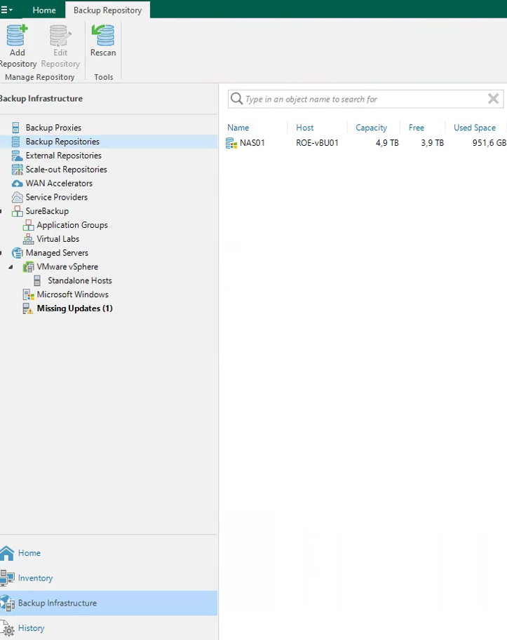

Tutorial – Backup & Disaster Recovery
This check verifies that backup repositories have enough free storage space.
Insufficient backup storage can cause:
Open the backup console and navigate to:
Backup Infrastructure → Backup Repositories
Verify that:
